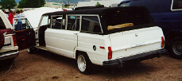
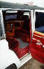

The Grand Wagoneer Limo.
 | Year | Serial Number Range | Production |
|---|---|---|
| 1981 | ? - ? | 2360 |
Serial numbers are located on the ...
The MBT trailer. Willys-Overland build some of these trailers as did other manufactures. The post war model is the M100, which looks almost identical. The M416 looks very similar to, but it has squared off fenders. They are all 1/4 ton trailers.
| Year | Serial Number Range | Production |
|---|---|---|
| 1943 | ? - ? | ppp |
Serial numbers are located on the ...
The CJ-V35 is a special radio Jeep built for the Navy in 1950. It is based on the CJ-3A.
| Year | Serial Number Range | Production |
|---|---|---|
| 1950 | 10001 - 11000 | 1000 |
Serial numbers are located on the ...